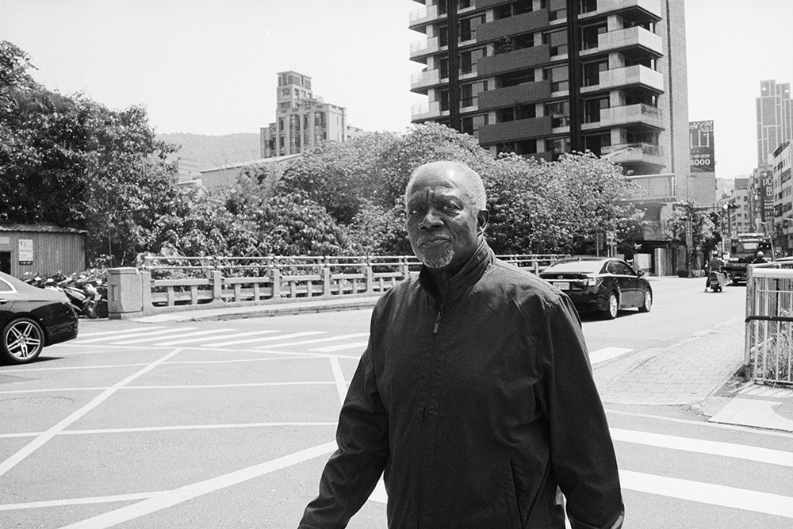
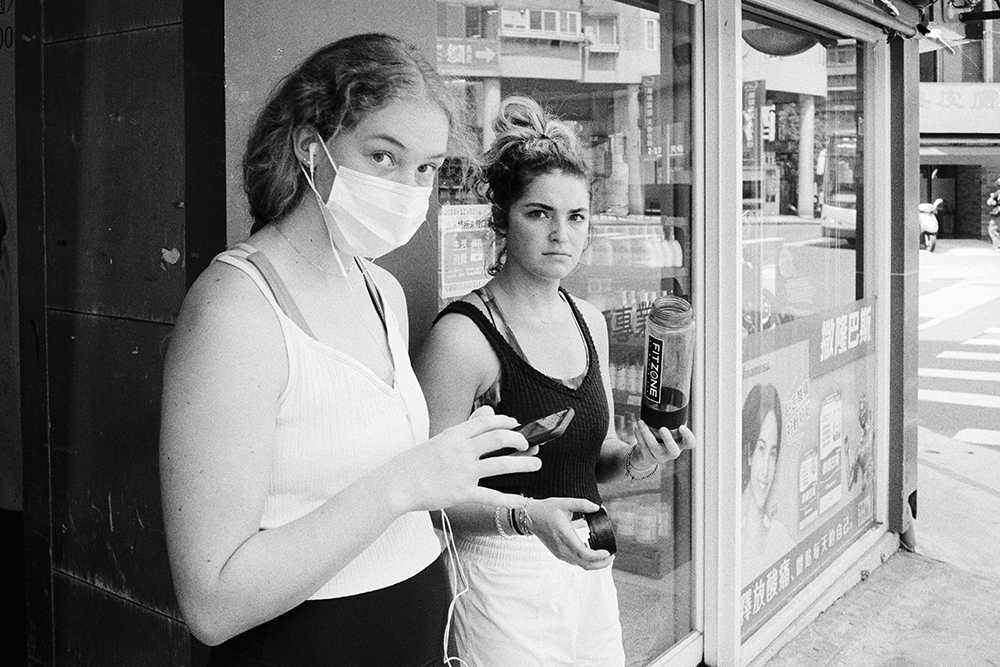
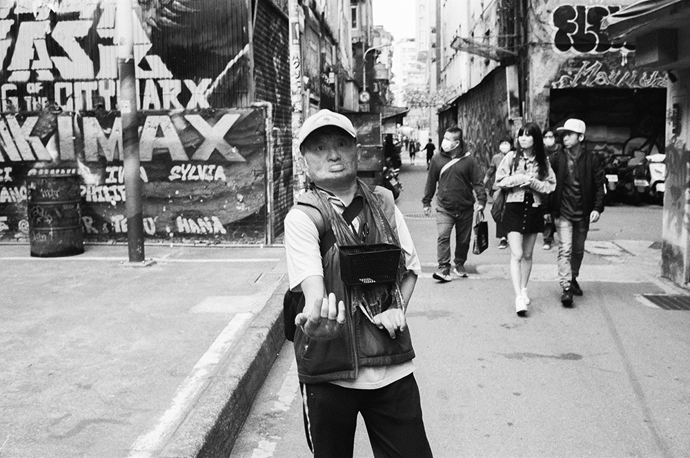

 

|
抽象危險犯, 嚴紹恩 @kuzu.syachou 「抽象危險犯」在法律的觀點，係立法者依其生活之經驗大量觀察，認為某一類型行為對於特定法益帶有一般高度危險性。因此，只要行為人做出符合構成要件所描述之事實，依照經驗法則，後續發展將會造成特定人受到侵害。 攝影之於我形似抽象危險犯，係基於對生活經驗的大量觀察，而以攝影行為對社會法益或個人法益製造危險，意即升高其法所不容許的風險，係屬行為人所創造出來的作品。 對我來說，街頭抓拍係對被攝物毫不留情的騷擾，使用粗暴的快速接近主體，類似刑法上現在不法之侵害，但對於我來說，快速的接頭抓拍，使我超脫於社會價值的規範，好似自身真的是一位在刑法上的抽象危險犯，不顧忌任何可能對於特定法益所帶來的高度危險性。 |